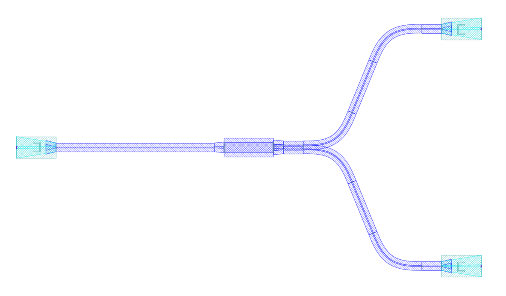

Module gpdk.routing.fanout.h_fanout
Expand source code
from dataclasses import dataclass
from typing import Callable, List, Optional, Sequence, Tuple, cast
from fnpcell import all as fp
from gpdk.components.sbend.sbend import SBendPair
from gpdk.components.straight.straight import Straight
from gpdk.technology import get_technology
from gpdk.util import all as util
@fp.pcell_class()
@dataclass(eq=False)
class HFanout(fp.PCell):
"""
Attributes:
device: device whose ports need fanout
left_spacing: spacing between left ports
right_spacing: spacing between right ports
bend_degrees: defaults to 30 degrees
bend_factories: a callable which receives an `IWaveguideType` and returns an `IBendWaveguideFactory`
device_left_ports: Optional, device left ports from top to bottom
device_right_ports: Optional, device right ports from bottom to top
left_distance: Optional
right_distance: Optional
left_ports: Optional, port options for left ports
right_ports: Optional, port options for right ports
left_waveguide_type: Optional, type of left waveguide
right_waveguide_type: Optional, type of right waveguide
connect_length: defaults to 10, distance between generated port and sbend
Examples:
```python
from gpdk.technology.bend_factory import EulerBendFactory
def bend_factories(waveguide_type: fp.IWaveguideType):
if waveguide_type == TECH.WG.FWG.C.WIRE:
return EulerBendFactory(radius_min=15, l_max=15, waveguide_type=waveguide_type)
return waveguide_type.bend_factory
device = HFanout(device=Mmi(waveguide_type=TECH.WG.FWG.C.WIRE), left_spacing=120, right_spacing=120, left_distance=100, right_distance=100,
bend_factories=bend_factories, left_waveguide_type=TECH.WG.SWG.C.WIRE, right_waveguide_type=TECH.WG.SWG.C.WIRE)
fp.plot(device)
```

"""
device: fp.IDevice = fp.DeviceParam().as_field()
left_spacing: float = fp.PositiveFloatParam().as_field()
right_spacing: float = fp.PositiveFloatParam().as_field()
bend_degrees: float = fp.DegreeParam(default=30, min=0, max=90, invalid=[0]).as_field()
bend_factories: Optional[Callable[[fp.IWaveguideType], fp.IBendWaveguideFactory]] = fp.Param(required=False).as_field()
device_left_ports: Sequence[str] = fp.NameListParam(required=False, doc="device left ports from top to bottom").as_field()
device_right_ports: Sequence[str] = fp.NameListParam(required=False, doc="device right ports from bottom to top").as_field()
left_distance: Optional[float] = fp.FloatParam(required=False, min=0).as_field()
right_distance: Optional[float] = fp.FloatParam(required=False, min=0).as_field()
left_ports: Optional[fp.IPortOptions] = fp.PortOptionsParam(required=False).as_field()
right_ports: Optional[fp.IPortOptions] = fp.PortOptionsParam(required=False).as_field()
left_waveguide_type: Optional[fp.IWaveguideType] = fp.WaveguideTypeParam(required=False).as_field()
right_waveguide_type: Optional[fp.IWaveguideType] = fp.WaveguideTypeParam(required=False).as_field()
connect_length: float = fp.PositiveFloatParam(default=10).as_field()
def build(self) -> Tuple[fp.InstanceSet, fp.ElementSet, fp.PortSet]:
insts, elems, ports = super().build()
TECH = get_technology()
device = self.device
left_spacing = self.left_spacing
right_spacing = self.right_spacing
bend_degrees = self.bend_degrees
bend_factories = self.bend_factories
device_left_ports = self.device_left_ports
device_right_ports = self.device_right_ports
left_distance = self.left_distance
right_distance = self.right_distance
left_ports = self.left_ports
right_ports = self.right_ports
left_waveguide_type = self.left_waveguide_type
right_waveguide_type = self.right_waveguide_type
connect_length = self.connect_length
if device_left_ports is None:
device_left_ports = cast(List[str], [port.name for port in util.ports.get_left_ports(device)])
device_left_ports = list(device_left_ports)
if device_right_ports is None:
device_right_ports = cast(List[str], [port.name for port in util.ports.get_right_ports(device, reverse=True)])
device_right_ports = list(device_right_ports)
left_ports = left_ports or device_left_ports
right_ports = right_ports or device_right_ports
result_left_ports: List[fp.IOwnedTerminal] = []
left_joints: List[Tuple[fp.IOwnedTerminal, fp.IOwnedTerminal]] = []
left_count = len(device_left_ports)
assert len(left_ports) == left_count, "len(left_ports) must be equal to len(device_left_ports)"
for i in range(left_count // 2):
device_ltop_port = cast(fp.IOwnedPort, device[device_left_ports[i]])
ltop_port = device_ltop_port
device_lbottom_port = cast(fp.IOwnedPort, device[device_left_ports[left_count - i - 1]])
lbottom_port = device_lbottom_port
ltop_distance = left_distance
lbottom_distance = left_distance
if ltop_distance:
ltop_distance -= connect_length * 2
if lbottom_distance:
lbottom_distance -= connect_length * 2
ltop_transition = None
lbottom_transition = None
if left_waveguide_type:
if ltop_port.waveguide_type != left_waveguide_type:
assert ltop_distance, "left_distance is required for auto transition"
ltop_transition, (port_in, port_out) = TECH.AUTO_TRANSITION.DEFAULT[ltop_port.waveguide_type >> left_waveguide_type]
ltop_distance -= fp.distance_between(ltop_transition[port_in].position, ltop_transition[port_out].position)
if lbottom_port.waveguide_type != left_waveguide_type:
assert lbottom_distance, "left_distance is required for auto transition"
lbottom_transition, (port_in, port_out) = TECH.AUTO_TRANSITION.DEFAULT[lbottom_port.waveguide_type >> left_waveguide_type]
lbottom_distance -= fp.distance_between(lbottom_transition[port_in].position, lbottom_transition[port_out].position)
lconnect_top1 = Straight(
name="lctop1",
length=connect_length,
waveguide_type=ltop_port.waveguide_type,
)
lconnect_top2 = Straight(
name="lctop2",
length=connect_length,
waveguide_type=ltop_port.waveguide_type,
)
lconnect_bottom1 = Straight(
name="lcbottom1",
length=connect_length,
waveguide_type=lbottom_port.waveguide_type,
)
lconnect_bottom2 = Straight(
name="lcbottom2",
length=connect_length,
waveguide_type=lbottom_port.waveguide_type,
)
ltop_sbend, lbottom_sbend = SBendPair(
top_distance=ltop_distance,
bottom_distance=lbottom_distance,
left_spacing=left_spacing * (left_count - i * 2 - 1),
right_spacing=fp.distance_between(ltop_port.position, lbottom_port.position),
bend_degrees=bend_degrees,
top_type=ltop_port.waveguide_type,
bottom_type=lbottom_port.waveguide_type,
top_bend_factory=bend_factories and bend_factories(ltop_port.waveguide_type),
bottom_bend_factory=bend_factories and bend_factories(lbottom_port.waveguide_type),
)
left_joints.append(ltop_port <= lconnect_top1["op_1"])
left_joints.append(lconnect_top1["op_0"] <= ltop_sbend["op_1"])
left_joints.append(ltop_sbend["op_0"] <= lconnect_top2["op_1"])
ltop_port = lconnect_top2["op_0"]
left_joints.append(lbottom_port <= lconnect_bottom1["op_1"])
left_joints.append(lconnect_bottom1["op_0"] <= lbottom_sbend["op_1"])
left_joints.append(lbottom_sbend["op_0"] <= lconnect_bottom2["op_1"])
lbottom_port = lconnect_bottom2["op_0"]
if ltop_transition:
left_joints.append(ltop_port <= ltop_transition["op_0"])
ltop_port = ltop_transition["op_1"]
if lbottom_transition:
left_joints.append(lbottom_port <= lbottom_transition["op_0"])
lbottom_port = lbottom_transition["op_1"]
result_left_ports.insert(0, ltop_port)
result_left_ports.append(lbottom_port)
if not left_distance:
left_distance = abs(ltop_port.position[0] - device_ltop_port.position[0])
if left_distance and left_count % 2:
lindex = left_count // 2
lmiddle_port = cast(fp.IOwnedPort, device[device_left_ports[lindex]])
lmiddle_distance = left_distance
lmiddle_transition = None
if left_waveguide_type and lmiddle_port.waveguide_type != left_waveguide_type:
assert lmiddle_distance, "middle_distance is required for auto transition"
lmiddle_transition, (port_in, port_out) = TECH.AUTO_TRANSITION.DEFAULT[lmiddle_port.waveguide_type >> left_waveguide_type]
lmiddle_distance -= fp.distance_between(lmiddle_transition[port_in].position, lmiddle_transition[port_out].position)
lstraight = Straight(
name="lmiddle",
length=lmiddle_distance,
waveguide_type=lmiddle_port.waveguide_type,
)
left_joints.append(lmiddle_port <= lstraight["op_1"])
lmiddle_port = lstraight["op_0"]
if lmiddle_transition:
left_joints.append(lmiddle_port <= lmiddle_transition["op_0"])
lmiddle_port = lmiddle_transition["op_1"]
result_left_ports.insert(lindex, lmiddle_port)
############################
result_right_ports: List[fp.IOwnedTerminal] = []
right_joints: List[Tuple[fp.IOwnedTerminal, fp.IOwnedTerminal]] = []
right_count = len(device_right_ports)
assert len(right_ports) == right_count, "len(right_ports) must be equal to len(device_right_ports)"
for i in range(right_count // 2):
device_rbottom_port = cast(fp.IOwnedPort, device[device_right_ports[i]])
rbottom_port = device_rbottom_port
device_rtop_port = cast(fp.IOwnedPort, device[device_right_ports[right_count - i - 1]])
rtop_port = device_rtop_port
rbottom_distance = right_distance
rtop_distance = right_distance
if rbottom_distance:
rbottom_distance -= connect_length * 2
if rtop_distance:
rtop_distance -= connect_length * 2
rbottom_transition = None
rtop_transition = None
if right_waveguide_type:
if rbottom_port.waveguide_type != right_waveguide_type:
assert rbottom_distance, "right_distance is required for auto transition"
rbottom_transition, (port_in, port_out) = TECH.AUTO_TRANSITION.DEFAULT[rbottom_port.waveguide_type >> right_waveguide_type]
rbottom_distance -= fp.distance_between(rbottom_transition[port_in].position, rbottom_transition[port_out].position)
if rtop_port.waveguide_type != right_waveguide_type:
assert rtop_distance, "right_distance is required for auto transition"
rtop_transition, (port_in, port_out) = TECH.AUTO_TRANSITION.DEFAULT[rtop_port.waveguide_type >> right_waveguide_type]
rtop_distance -= fp.distance_between(rtop_transition[port_in].position, rtop_transition[port_out].position)
rconnect_top1 = Straight(
name="rctop1",
length=connect_length,
waveguide_type=rtop_port.waveguide_type,
)
rconnect_top2 = Straight(
name="rctop2",
length=connect_length,
waveguide_type=rtop_port.waveguide_type,
)
rconnect_bottom1 = Straight(
name="rcbottom1",
length=connect_length,
waveguide_type=rbottom_port.waveguide_type,
)
rconnect_bottom2 = Straight(
name="rcbottom2",
length=connect_length,
waveguide_type=rbottom_port.waveguide_type,
)
rtop_sbend, rbottom_sbend = SBendPair(
top_distance=rtop_distance,
bottom_distance=rbottom_distance,
left_spacing=fp.distance_between(rtop_port.position, rbottom_port.position),
right_spacing=right_spacing * (right_count - i * 2 - 1),
bend_degrees=bend_degrees,
top_type=rtop_port.waveguide_type,
bottom_type=rbottom_port.waveguide_type,
top_bend_factory=bend_factories and bend_factories(rtop_port.waveguide_type),
bottom_bend_factory=bend_factories and bend_factories(rbottom_port.waveguide_type),
)
right_joints.append(rbottom_port <= rconnect_bottom1["op_0"])
right_joints.append(rconnect_bottom1["op_1"] <= rbottom_sbend["op_0"])
right_joints.append(rbottom_sbend["op_1"] <= rconnect_bottom2["op_0"])
rbottom_port = rconnect_bottom2["op_1"]
right_joints.append(rtop_port <= rconnect_top1["op_0"])
right_joints.append(rconnect_top1["op_1"] <= rtop_sbend["op_0"])
right_joints.append(rtop_sbend["op_1"] <= rconnect_top2["op_0"])
rtop_port = rconnect_top2["op_1"]
if rbottom_transition:
right_joints.append(rbottom_port <= rbottom_transition["op_0"])
rbottom_port = rbottom_transition["op_1"]
if rtop_transition:
right_joints.append(rtop_port <= rtop_transition["op_0"])
rtop_port = rtop_transition["op_1"]
result_right_ports.insert(0, rbottom_port)
result_right_ports.append(rtop_port)
if not right_distance:
right_distance = abs(rbottom_port.position[0] - device_rbottom_port.position[0])
if right_distance and right_count % 2:
rindex = right_count // 2
rmiddle_port = cast(fp.IOwnedPort, device[device_right_ports[rindex]])
rmiddle_distance = left_distance
rmiddle_transition = None
if right_waveguide_type and rmiddle_port.waveguide_type != right_waveguide_type:
assert rmiddle_distance, "middle_distance is required for auto transition"
rmiddle_transition, (port_in, port_out) = TECH.AUTO_TRANSITION.DEFAULT[rmiddle_port.waveguide_type >> right_waveguide_type]
rmiddle_distance -= fp.distance_between(rmiddle_transition[port_in].position, rmiddle_transition[port_out].position)
rstraight = Straight(
name="rmiddle",
length=right_distance,
waveguide_type=rmiddle_port.waveguide_type,
)
right_joints.append(rmiddle_port <= rstraight["op_0"])
rmiddle_port = rstraight["op_1"]
if rmiddle_transition:
left_joints.append(rmiddle_port <= rmiddle_transition["op_0"])
rmiddle_port = rmiddle_transition["op_1"]
result_right_ports.insert(rindex, rmiddle_port)
used_port_names = frozenset((device_left_ports or []) + (device_right_ports or []))
unused_ports = [port for port in device.ports if port.name not in used_port_names]
connected = fp.Connected(
joints=left_joints + right_joints,
ports=(
([port.with_name(left_ports[i]) for i, port in enumerate(result_left_ports)])
+ ([port.with_name(right_ports[i]) for i, port in enumerate(result_right_ports)])
+ unused_ports
),
)
insts += connected
ports += connected.ports
return insts, elems, ports
if __name__ == "__main__":
from pathlib import Path
gds_file = Path(__file__).parent / "local" / Path(__file__).with_suffix(".gds").name
library = fp.Library()
TECH = get_technology()
# =============================================================
# fmt: off
from gpdk.components.directional_coupler.directional_coupler_sbend import DirectionalCouplerSBend
from gpdk.components.mmi.mmi import Mmi
from gpdk.technology.waveguide_factory import EulerBendFactory
def bend_factories(waveguide_type: fp.IWaveguideType):
if waveguide_type == TECH.WG.FWG.C.WIRE:
return EulerBendFactory(radius_min=15, l_max=15, waveguide_type=waveguide_type)
return waveguide_type.bend_factory
library += [
HFanout(
name="dc_f0",
device=Mmi(waveguide_type=TECH.WG.FWG.C.WIRE), # for DEMO
left_spacing=20,
right_spacing=40,
left_distance=50,
right_distance=100,
bend_degrees=30,
device_left_ports=["op_0"],
device_right_ports=["op_1"],
# left_ports=["op_0", "op_1", "op_2", "op_3"],
),
HFanout(
name="dc_f1",
device=DirectionalCouplerSBend(
name="0",
coupler_length=24,
coupler_spacing=2.8,
waveguide_type=TECH.WG.FWG.C.WIRE,
), # for DEMO
left_spacing=20,
right_spacing=40,
left_distance=50,
right_distance=100,
# bend_degrees=60,
# radius_eff=7,
device_left_ports=[
"op_0",
],
device_right_ports=["op_2", "op_3"],
left_waveguide_type=TECH.WG.SWG.C.WIRE,
right_waveguide_type=TECH.WG.SWG.C.WIRE,
# ports=["op_0", "op_1", "op_2", "op_3"],
).translated(0, 50),
HFanout(
name="dc_f1",
device=DirectionalCouplerSBend(
name="0",
coupler_length=24,
coupler_spacing=2.8,
waveguide_type=TECH.WG.FWG.C.WIRE,
), # for DEMO
left_spacing=120,
right_spacing=120,
left_distance=100,
right_distance=100,
bend_factories=bend_factories,
device_left_ports=[
"op_0",
],
device_right_ports=["op_2", "op_3"],
left_waveguide_type=TECH.WG.SWG.C.WIRE,
right_waveguide_type=TECH.WG.SWG.C.WIRE,
).translated(0, 150),
HFanout(
name="dc_f1",
device=Mmi(waveguide_type=TECH.WG.FWG.C.WIRE),
left_spacing=120,
right_spacing=120,
left_distance=100,
right_distance=100,
bend_factories=bend_factories,
left_waveguide_type=TECH.WG.SWG.C.WIRE,
right_waveguide_type=TECH.WG.SWG.C.WIRE,
).translated(0, 250),
]
# fmt: on
# =============================================================
fp.export_gds(library, file=gds_file)
# fp.plot(library)Classes
class HFanout (name: str = None, bands: Optional[FrozenSet[fnpcell.interfaces.IBand]] = None, patches: Tuple[fnpcell.interfaces.IElement, ...] = (), port_names: Sequence[Union[None, str, fnpcell.interfaces.Hidden]] = (), transform: fnpcell.transform.Affine2D = None, device: fnpcell.interfaces.ICellRef = None, left_spacing: float = None, right_spacing: float = None, bend_degrees: float = 30, bend_factories: Optional[Callable[[fnpcell.interfaces.IWaveguideType], fnpcell.interfaces.IBendWaveguideFactory]] = None, device_left_ports: Sequence[str] = None, device_right_ports: Sequence[str] = None, left_distance: Optional[float] = None, right_distance: Optional[float] = None, left_ports: Optional[Sequence[Union[None, str, fnpcell.interfaces.Hidden]]] = None, right_ports: Optional[Sequence[Union[None, str, fnpcell.interfaces.Hidden]]] = None, left_waveguide_type: Optional[fnpcell.interfaces.IWaveguideType] = None, right_waveguide_type: Optional[fnpcell.interfaces.IWaveguideType] = None, connect_length: float = 10)-
Attributes: device: device whose ports need fanout left_spacing: spacing between left ports right_spacing: spacing between right ports bend_degrees: defaults to 30 degrees bend_factories: a callable which receives an
IWaveguideTypeand returns anIBendWaveguideFactorydevice_left_ports: Optional, device left ports from top to bottom device_right_ports: Optional, device right ports from bottom to top left_distance: Optional right_distance: Optional left_ports: Optional, port options for left ports right_ports: Optional, port options for right ports left_waveguide_type: Optional, type of left waveguide right_waveguide_type: Optional, type of right waveguide connect_length: defaults to 10, distance between generated port and sbendExamples:
from gpdk.technology.bend_factory import EulerBendFactory def bend_factories(waveguide_type: fp.IWaveguideType): if waveguide_type == TECH.WG.FWG.C.WIRE: return EulerBendFactory(radius_min=15, l_max=15, waveguide_type=waveguide_type) return waveguide_type.bend_factory device = HFanout(device=Mmi(waveguide_type=TECH.WG.FWG.C.WIRE), left_spacing=120, right_spacing=120, left_distance=100, right_distance=100, bend_factories=bend_factories, left_waveguide_type=TECH.WG.SWG.C.WIRE, right_waveguide_type=TECH.WG.SWG.C.WIRE) fp.plot(device)
Expand source code
class HFanout(fp.PCell): """ Attributes: device: device whose ports need fanout left_spacing: spacing between left ports right_spacing: spacing between right ports bend_degrees: defaults to 30 degrees bend_factories: a callable which receives an `IWaveguideType` and returns an `IBendWaveguideFactory` device_left_ports: Optional, device left ports from top to bottom device_right_ports: Optional, device right ports from bottom to top left_distance: Optional right_distance: Optional left_ports: Optional, port options for left ports right_ports: Optional, port options for right ports left_waveguide_type: Optional, type of left waveguide right_waveguide_type: Optional, type of right waveguide connect_length: defaults to 10, distance between generated port and sbend Examples: ```python from gpdk.technology.bend_factory import EulerBendFactory def bend_factories(waveguide_type: fp.IWaveguideType): if waveguide_type == TECH.WG.FWG.C.WIRE: return EulerBendFactory(radius_min=15, l_max=15, waveguide_type=waveguide_type) return waveguide_type.bend_factory device = HFanout(device=Mmi(waveguide_type=TECH.WG.FWG.C.WIRE), left_spacing=120, right_spacing=120, left_distance=100, right_distance=100, bend_factories=bend_factories, left_waveguide_type=TECH.WG.SWG.C.WIRE, right_waveguide_type=TECH.WG.SWG.C.WIRE) fp.plot(device) ```  """ device: fp.IDevice = fp.DeviceParam().as_field() left_spacing: float = fp.PositiveFloatParam().as_field() right_spacing: float = fp.PositiveFloatParam().as_field() bend_degrees: float = fp.DegreeParam(default=30, min=0, max=90, invalid=[0]).as_field() bend_factories: Optional[Callable[[fp.IWaveguideType], fp.IBendWaveguideFactory]] = fp.Param(required=False).as_field() device_left_ports: Sequence[str] = fp.NameListParam(required=False, doc="device left ports from top to bottom").as_field() device_right_ports: Sequence[str] = fp.NameListParam(required=False, doc="device right ports from bottom to top").as_field() left_distance: Optional[float] = fp.FloatParam(required=False, min=0).as_field() right_distance: Optional[float] = fp.FloatParam(required=False, min=0).as_field() left_ports: Optional[fp.IPortOptions] = fp.PortOptionsParam(required=False).as_field() right_ports: Optional[fp.IPortOptions] = fp.PortOptionsParam(required=False).as_field() left_waveguide_type: Optional[fp.IWaveguideType] = fp.WaveguideTypeParam(required=False).as_field() right_waveguide_type: Optional[fp.IWaveguideType] = fp.WaveguideTypeParam(required=False).as_field() connect_length: float = fp.PositiveFloatParam(default=10).as_field() def build(self) -> Tuple[fp.InstanceSet, fp.ElementSet, fp.PortSet]: insts, elems, ports = super().build() TECH = get_technology() device = self.device left_spacing = self.left_spacing right_spacing = self.right_spacing bend_degrees = self.bend_degrees bend_factories = self.bend_factories device_left_ports = self.device_left_ports device_right_ports = self.device_right_ports left_distance = self.left_distance right_distance = self.right_distance left_ports = self.left_ports right_ports = self.right_ports left_waveguide_type = self.left_waveguide_type right_waveguide_type = self.right_waveguide_type connect_length = self.connect_length if device_left_ports is None: device_left_ports = cast(List[str], [port.name for port in util.ports.get_left_ports(device)]) device_left_ports = list(device_left_ports) if device_right_ports is None: device_right_ports = cast(List[str], [port.name for port in util.ports.get_right_ports(device, reverse=True)]) device_right_ports = list(device_right_ports) left_ports = left_ports or device_left_ports right_ports = right_ports or device_right_ports result_left_ports: List[fp.IOwnedTerminal] = [] left_joints: List[Tuple[fp.IOwnedTerminal, fp.IOwnedTerminal]] = [] left_count = len(device_left_ports) assert len(left_ports) == left_count, "len(left_ports) must be equal to len(device_left_ports)" for i in range(left_count // 2): device_ltop_port = cast(fp.IOwnedPort, device[device_left_ports[i]]) ltop_port = device_ltop_port device_lbottom_port = cast(fp.IOwnedPort, device[device_left_ports[left_count - i - 1]]) lbottom_port = device_lbottom_port ltop_distance = left_distance lbottom_distance = left_distance if ltop_distance: ltop_distance -= connect_length * 2 if lbottom_distance: lbottom_distance -= connect_length * 2 ltop_transition = None lbottom_transition = None if left_waveguide_type: if ltop_port.waveguide_type != left_waveguide_type: assert ltop_distance, "left_distance is required for auto transition" ltop_transition, (port_in, port_out) = TECH.AUTO_TRANSITION.DEFAULT[ltop_port.waveguide_type >> left_waveguide_type] ltop_distance -= fp.distance_between(ltop_transition[port_in].position, ltop_transition[port_out].position) if lbottom_port.waveguide_type != left_waveguide_type: assert lbottom_distance, "left_distance is required for auto transition" lbottom_transition, (port_in, port_out) = TECH.AUTO_TRANSITION.DEFAULT[lbottom_port.waveguide_type >> left_waveguide_type] lbottom_distance -= fp.distance_between(lbottom_transition[port_in].position, lbottom_transition[port_out].position) lconnect_top1 = Straight( name="lctop1", length=connect_length, waveguide_type=ltop_port.waveguide_type, ) lconnect_top2 = Straight( name="lctop2", length=connect_length, waveguide_type=ltop_port.waveguide_type, ) lconnect_bottom1 = Straight( name="lcbottom1", length=connect_length, waveguide_type=lbottom_port.waveguide_type, ) lconnect_bottom2 = Straight( name="lcbottom2", length=connect_length, waveguide_type=lbottom_port.waveguide_type, ) ltop_sbend, lbottom_sbend = SBendPair( top_distance=ltop_distance, bottom_distance=lbottom_distance, left_spacing=left_spacing * (left_count - i * 2 - 1), right_spacing=fp.distance_between(ltop_port.position, lbottom_port.position), bend_degrees=bend_degrees, top_type=ltop_port.waveguide_type, bottom_type=lbottom_port.waveguide_type, top_bend_factory=bend_factories and bend_factories(ltop_port.waveguide_type), bottom_bend_factory=bend_factories and bend_factories(lbottom_port.waveguide_type), ) left_joints.append(ltop_port <= lconnect_top1["op_1"]) left_joints.append(lconnect_top1["op_0"] <= ltop_sbend["op_1"]) left_joints.append(ltop_sbend["op_0"] <= lconnect_top2["op_1"]) ltop_port = lconnect_top2["op_0"] left_joints.append(lbottom_port <= lconnect_bottom1["op_1"]) left_joints.append(lconnect_bottom1["op_0"] <= lbottom_sbend["op_1"]) left_joints.append(lbottom_sbend["op_0"] <= lconnect_bottom2["op_1"]) lbottom_port = lconnect_bottom2["op_0"] if ltop_transition: left_joints.append(ltop_port <= ltop_transition["op_0"]) ltop_port = ltop_transition["op_1"] if lbottom_transition: left_joints.append(lbottom_port <= lbottom_transition["op_0"]) lbottom_port = lbottom_transition["op_1"] result_left_ports.insert(0, ltop_port) result_left_ports.append(lbottom_port) if not left_distance: left_distance = abs(ltop_port.position[0] - device_ltop_port.position[0]) if left_distance and left_count % 2: lindex = left_count // 2 lmiddle_port = cast(fp.IOwnedPort, device[device_left_ports[lindex]]) lmiddle_distance = left_distance lmiddle_transition = None if left_waveguide_type and lmiddle_port.waveguide_type != left_waveguide_type: assert lmiddle_distance, "middle_distance is required for auto transition" lmiddle_transition, (port_in, port_out) = TECH.AUTO_TRANSITION.DEFAULT[lmiddle_port.waveguide_type >> left_waveguide_type] lmiddle_distance -= fp.distance_between(lmiddle_transition[port_in].position, lmiddle_transition[port_out].position) lstraight = Straight( name="lmiddle", length=lmiddle_distance, waveguide_type=lmiddle_port.waveguide_type, ) left_joints.append(lmiddle_port <= lstraight["op_1"]) lmiddle_port = lstraight["op_0"] if lmiddle_transition: left_joints.append(lmiddle_port <= lmiddle_transition["op_0"]) lmiddle_port = lmiddle_transition["op_1"] result_left_ports.insert(lindex, lmiddle_port) ############################ result_right_ports: List[fp.IOwnedTerminal] = [] right_joints: List[Tuple[fp.IOwnedTerminal, fp.IOwnedTerminal]] = [] right_count = len(device_right_ports) assert len(right_ports) == right_count, "len(right_ports) must be equal to len(device_right_ports)" for i in range(right_count // 2): device_rbottom_port = cast(fp.IOwnedPort, device[device_right_ports[i]]) rbottom_port = device_rbottom_port device_rtop_port = cast(fp.IOwnedPort, device[device_right_ports[right_count - i - 1]]) rtop_port = device_rtop_port rbottom_distance = right_distance rtop_distance = right_distance if rbottom_distance: rbottom_distance -= connect_length * 2 if rtop_distance: rtop_distance -= connect_length * 2 rbottom_transition = None rtop_transition = None if right_waveguide_type: if rbottom_port.waveguide_type != right_waveguide_type: assert rbottom_distance, "right_distance is required for auto transition" rbottom_transition, (port_in, port_out) = TECH.AUTO_TRANSITION.DEFAULT[rbottom_port.waveguide_type >> right_waveguide_type] rbottom_distance -= fp.distance_between(rbottom_transition[port_in].position, rbottom_transition[port_out].position) if rtop_port.waveguide_type != right_waveguide_type: assert rtop_distance, "right_distance is required for auto transition" rtop_transition, (port_in, port_out) = TECH.AUTO_TRANSITION.DEFAULT[rtop_port.waveguide_type >> right_waveguide_type] rtop_distance -= fp.distance_between(rtop_transition[port_in].position, rtop_transition[port_out].position) rconnect_top1 = Straight( name="rctop1", length=connect_length, waveguide_type=rtop_port.waveguide_type, ) rconnect_top2 = Straight( name="rctop2", length=connect_length, waveguide_type=rtop_port.waveguide_type, ) rconnect_bottom1 = Straight( name="rcbottom1", length=connect_length, waveguide_type=rbottom_port.waveguide_type, ) rconnect_bottom2 = Straight( name="rcbottom2", length=connect_length, waveguide_type=rbottom_port.waveguide_type, ) rtop_sbend, rbottom_sbend = SBendPair( top_distance=rtop_distance, bottom_distance=rbottom_distance, left_spacing=fp.distance_between(rtop_port.position, rbottom_port.position), right_spacing=right_spacing * (right_count - i * 2 - 1), bend_degrees=bend_degrees, top_type=rtop_port.waveguide_type, bottom_type=rbottom_port.waveguide_type, top_bend_factory=bend_factories and bend_factories(rtop_port.waveguide_type), bottom_bend_factory=bend_factories and bend_factories(rbottom_port.waveguide_type), ) right_joints.append(rbottom_port <= rconnect_bottom1["op_0"]) right_joints.append(rconnect_bottom1["op_1"] <= rbottom_sbend["op_0"]) right_joints.append(rbottom_sbend["op_1"] <= rconnect_bottom2["op_0"]) rbottom_port = rconnect_bottom2["op_1"] right_joints.append(rtop_port <= rconnect_top1["op_0"]) right_joints.append(rconnect_top1["op_1"] <= rtop_sbend["op_0"]) right_joints.append(rtop_sbend["op_1"] <= rconnect_top2["op_0"]) rtop_port = rconnect_top2["op_1"] if rbottom_transition: right_joints.append(rbottom_port <= rbottom_transition["op_0"]) rbottom_port = rbottom_transition["op_1"] if rtop_transition: right_joints.append(rtop_port <= rtop_transition["op_0"]) rtop_port = rtop_transition["op_1"] result_right_ports.insert(0, rbottom_port) result_right_ports.append(rtop_port) if not right_distance: right_distance = abs(rbottom_port.position[0] - device_rbottom_port.position[0]) if right_distance and right_count % 2: rindex = right_count // 2 rmiddle_port = cast(fp.IOwnedPort, device[device_right_ports[rindex]]) rmiddle_distance = left_distance rmiddle_transition = None if right_waveguide_type and rmiddle_port.waveguide_type != right_waveguide_type: assert rmiddle_distance, "middle_distance is required for auto transition" rmiddle_transition, (port_in, port_out) = TECH.AUTO_TRANSITION.DEFAULT[rmiddle_port.waveguide_type >> right_waveguide_type] rmiddle_distance -= fp.distance_between(rmiddle_transition[port_in].position, rmiddle_transition[port_out].position) rstraight = Straight( name="rmiddle", length=right_distance, waveguide_type=rmiddle_port.waveguide_type, ) right_joints.append(rmiddle_port <= rstraight["op_0"]) rmiddle_port = rstraight["op_1"] if rmiddle_transition: left_joints.append(rmiddle_port <= rmiddle_transition["op_0"]) rmiddle_port = rmiddle_transition["op_1"] result_right_ports.insert(rindex, rmiddle_port) used_port_names = frozenset((device_left_ports or []) + (device_right_ports or [])) unused_ports = [port for port in device.ports if port.name not in used_port_names] connected = fp.Connected( joints=left_joints + right_joints, ports=( ([port.with_name(left_ports[i]) for i, port in enumerate(result_left_ports)]) + ([port.with_name(right_ports[i]) for i, port in enumerate(result_right_ports)]) + unused_ports ), ) insts += connected ports += connected.ports return insts, elems, portsAncestors
- fnpcell.pdk.pcell.PCell
- fnpcell.cell.cell_ref.CellRef
- fnpcell.mixin.transform_mixin.TransformMixin
- fnpcell.interfaces.ICellRef
- fnpcell.interfaces.IUpdatable
- fnpcell.interfaces.IElement
- fnpcell.interfaces.IRunnable
- fnpcell.interfaces.IAffineTransformable
Class variables
var bend_degrees : floatvar bend_factories : Optional[Callable[[fnpcell.interfaces.IWaveguideType], fnpcell.interfaces.IBendWaveguideFactory]]var connect_length : floatvar device : fnpcell.interfaces.ICellRefvar device_left_ports : Sequence[str]var device_right_ports : Sequence[str]var left_distance : Optional[float]var left_ports : Optional[Sequence[Union[None, str, fnpcell.interfaces.Hidden]]]var left_spacing : floatvar left_waveguide_type : Optional[fnpcell.interfaces.IWaveguideType]var right_distance : Optional[float]var right_ports : Optional[Sequence[Union[None, str, fnpcell.interfaces.Hidden]]]var right_spacing : floatvar right_waveguide_type : Optional[fnpcell.interfaces.IWaveguideType]
Methods
def build(self) ‑> Tuple[fnpcell.pdk.collection.InstanceSet, fnpcell.pdk.collection.ElementSet, fnpcell.pdk.collection.PortSet]-
Abstract method must be implemented to build a pcell.
Expand source code
def build(self) -> Tuple[fp.InstanceSet, fp.ElementSet, fp.PortSet]: insts, elems, ports = super().build() TECH = get_technology() device = self.device left_spacing = self.left_spacing right_spacing = self.right_spacing bend_degrees = self.bend_degrees bend_factories = self.bend_factories device_left_ports = self.device_left_ports device_right_ports = self.device_right_ports left_distance = self.left_distance right_distance = self.right_distance left_ports = self.left_ports right_ports = self.right_ports left_waveguide_type = self.left_waveguide_type right_waveguide_type = self.right_waveguide_type connect_length = self.connect_length if device_left_ports is None: device_left_ports = cast(List[str], [port.name for port in util.ports.get_left_ports(device)]) device_left_ports = list(device_left_ports) if device_right_ports is None: device_right_ports = cast(List[str], [port.name for port in util.ports.get_right_ports(device, reverse=True)]) device_right_ports = list(device_right_ports) left_ports = left_ports or device_left_ports right_ports = right_ports or device_right_ports result_left_ports: List[fp.IOwnedTerminal] = [] left_joints: List[Tuple[fp.IOwnedTerminal, fp.IOwnedTerminal]] = [] left_count = len(device_left_ports) assert len(left_ports) == left_count, "len(left_ports) must be equal to len(device_left_ports)" for i in range(left_count // 2): device_ltop_port = cast(fp.IOwnedPort, device[device_left_ports[i]]) ltop_port = device_ltop_port device_lbottom_port = cast(fp.IOwnedPort, device[device_left_ports[left_count - i - 1]]) lbottom_port = device_lbottom_port ltop_distance = left_distance lbottom_distance = left_distance if ltop_distance: ltop_distance -= connect_length * 2 if lbottom_distance: lbottom_distance -= connect_length * 2 ltop_transition = None lbottom_transition = None if left_waveguide_type: if ltop_port.waveguide_type != left_waveguide_type: assert ltop_distance, "left_distance is required for auto transition" ltop_transition, (port_in, port_out) = TECH.AUTO_TRANSITION.DEFAULT[ltop_port.waveguide_type >> left_waveguide_type] ltop_distance -= fp.distance_between(ltop_transition[port_in].position, ltop_transition[port_out].position) if lbottom_port.waveguide_type != left_waveguide_type: assert lbottom_distance, "left_distance is required for auto transition" lbottom_transition, (port_in, port_out) = TECH.AUTO_TRANSITION.DEFAULT[lbottom_port.waveguide_type >> left_waveguide_type] lbottom_distance -= fp.distance_between(lbottom_transition[port_in].position, lbottom_transition[port_out].position) lconnect_top1 = Straight( name="lctop1", length=connect_length, waveguide_type=ltop_port.waveguide_type, ) lconnect_top2 = Straight( name="lctop2", length=connect_length, waveguide_type=ltop_port.waveguide_type, ) lconnect_bottom1 = Straight( name="lcbottom1", length=connect_length, waveguide_type=lbottom_port.waveguide_type, ) lconnect_bottom2 = Straight( name="lcbottom2", length=connect_length, waveguide_type=lbottom_port.waveguide_type, ) ltop_sbend, lbottom_sbend = SBendPair( top_distance=ltop_distance, bottom_distance=lbottom_distance, left_spacing=left_spacing * (left_count - i * 2 - 1), right_spacing=fp.distance_between(ltop_port.position, lbottom_port.position), bend_degrees=bend_degrees, top_type=ltop_port.waveguide_type, bottom_type=lbottom_port.waveguide_type, top_bend_factory=bend_factories and bend_factories(ltop_port.waveguide_type), bottom_bend_factory=bend_factories and bend_factories(lbottom_port.waveguide_type), ) left_joints.append(ltop_port <= lconnect_top1["op_1"]) left_joints.append(lconnect_top1["op_0"] <= ltop_sbend["op_1"]) left_joints.append(ltop_sbend["op_0"] <= lconnect_top2["op_1"]) ltop_port = lconnect_top2["op_0"] left_joints.append(lbottom_port <= lconnect_bottom1["op_1"]) left_joints.append(lconnect_bottom1["op_0"] <= lbottom_sbend["op_1"]) left_joints.append(lbottom_sbend["op_0"] <= lconnect_bottom2["op_1"]) lbottom_port = lconnect_bottom2["op_0"] if ltop_transition: left_joints.append(ltop_port <= ltop_transition["op_0"]) ltop_port = ltop_transition["op_1"] if lbottom_transition: left_joints.append(lbottom_port <= lbottom_transition["op_0"]) lbottom_port = lbottom_transition["op_1"] result_left_ports.insert(0, ltop_port) result_left_ports.append(lbottom_port) if not left_distance: left_distance = abs(ltop_port.position[0] - device_ltop_port.position[0]) if left_distance and left_count % 2: lindex = left_count // 2 lmiddle_port = cast(fp.IOwnedPort, device[device_left_ports[lindex]]) lmiddle_distance = left_distance lmiddle_transition = None if left_waveguide_type and lmiddle_port.waveguide_type != left_waveguide_type: assert lmiddle_distance, "middle_distance is required for auto transition" lmiddle_transition, (port_in, port_out) = TECH.AUTO_TRANSITION.DEFAULT[lmiddle_port.waveguide_type >> left_waveguide_type] lmiddle_distance -= fp.distance_between(lmiddle_transition[port_in].position, lmiddle_transition[port_out].position) lstraight = Straight( name="lmiddle", length=lmiddle_distance, waveguide_type=lmiddle_port.waveguide_type, ) left_joints.append(lmiddle_port <= lstraight["op_1"]) lmiddle_port = lstraight["op_0"] if lmiddle_transition: left_joints.append(lmiddle_port <= lmiddle_transition["op_0"]) lmiddle_port = lmiddle_transition["op_1"] result_left_ports.insert(lindex, lmiddle_port) ############################ result_right_ports: List[fp.IOwnedTerminal] = [] right_joints: List[Tuple[fp.IOwnedTerminal, fp.IOwnedTerminal]] = [] right_count = len(device_right_ports) assert len(right_ports) == right_count, "len(right_ports) must be equal to len(device_right_ports)" for i in range(right_count // 2): device_rbottom_port = cast(fp.IOwnedPort, device[device_right_ports[i]]) rbottom_port = device_rbottom_port device_rtop_port = cast(fp.IOwnedPort, device[device_right_ports[right_count - i - 1]]) rtop_port = device_rtop_port rbottom_distance = right_distance rtop_distance = right_distance if rbottom_distance: rbottom_distance -= connect_length * 2 if rtop_distance: rtop_distance -= connect_length * 2 rbottom_transition = None rtop_transition = None if right_waveguide_type: if rbottom_port.waveguide_type != right_waveguide_type: assert rbottom_distance, "right_distance is required for auto transition" rbottom_transition, (port_in, port_out) = TECH.AUTO_TRANSITION.DEFAULT[rbottom_port.waveguide_type >> right_waveguide_type] rbottom_distance -= fp.distance_between(rbottom_transition[port_in].position, rbottom_transition[port_out].position) if rtop_port.waveguide_type != right_waveguide_type: assert rtop_distance, "right_distance is required for auto transition" rtop_transition, (port_in, port_out) = TECH.AUTO_TRANSITION.DEFAULT[rtop_port.waveguide_type >> right_waveguide_type] rtop_distance -= fp.distance_between(rtop_transition[port_in].position, rtop_transition[port_out].position) rconnect_top1 = Straight( name="rctop1", length=connect_length, waveguide_type=rtop_port.waveguide_type, ) rconnect_top2 = Straight( name="rctop2", length=connect_length, waveguide_type=rtop_port.waveguide_type, ) rconnect_bottom1 = Straight( name="rcbottom1", length=connect_length, waveguide_type=rbottom_port.waveguide_type, ) rconnect_bottom2 = Straight( name="rcbottom2", length=connect_length, waveguide_type=rbottom_port.waveguide_type, ) rtop_sbend, rbottom_sbend = SBendPair( top_distance=rtop_distance, bottom_distance=rbottom_distance, left_spacing=fp.distance_between(rtop_port.position, rbottom_port.position), right_spacing=right_spacing * (right_count - i * 2 - 1), bend_degrees=bend_degrees, top_type=rtop_port.waveguide_type, bottom_type=rbottom_port.waveguide_type, top_bend_factory=bend_factories and bend_factories(rtop_port.waveguide_type), bottom_bend_factory=bend_factories and bend_factories(rbottom_port.waveguide_type), ) right_joints.append(rbottom_port <= rconnect_bottom1["op_0"]) right_joints.append(rconnect_bottom1["op_1"] <= rbottom_sbend["op_0"]) right_joints.append(rbottom_sbend["op_1"] <= rconnect_bottom2["op_0"]) rbottom_port = rconnect_bottom2["op_1"] right_joints.append(rtop_port <= rconnect_top1["op_0"]) right_joints.append(rconnect_top1["op_1"] <= rtop_sbend["op_0"]) right_joints.append(rtop_sbend["op_1"] <= rconnect_top2["op_0"]) rtop_port = rconnect_top2["op_1"] if rbottom_transition: right_joints.append(rbottom_port <= rbottom_transition["op_0"]) rbottom_port = rbottom_transition["op_1"] if rtop_transition: right_joints.append(rtop_port <= rtop_transition["op_0"]) rtop_port = rtop_transition["op_1"] result_right_ports.insert(0, rbottom_port) result_right_ports.append(rtop_port) if not right_distance: right_distance = abs(rbottom_port.position[0] - device_rbottom_port.position[0]) if right_distance and right_count % 2: rindex = right_count // 2 rmiddle_port = cast(fp.IOwnedPort, device[device_right_ports[rindex]]) rmiddle_distance = left_distance rmiddle_transition = None if right_waveguide_type and rmiddle_port.waveguide_type != right_waveguide_type: assert rmiddle_distance, "middle_distance is required for auto transition" rmiddle_transition, (port_in, port_out) = TECH.AUTO_TRANSITION.DEFAULT[rmiddle_port.waveguide_type >> right_waveguide_type] rmiddle_distance -= fp.distance_between(rmiddle_transition[port_in].position, rmiddle_transition[port_out].position) rstraight = Straight( name="rmiddle", length=right_distance, waveguide_type=rmiddle_port.waveguide_type, ) right_joints.append(rmiddle_port <= rstraight["op_0"]) rmiddle_port = rstraight["op_1"] if rmiddle_transition: left_joints.append(rmiddle_port <= rmiddle_transition["op_0"]) rmiddle_port = rmiddle_transition["op_1"] result_right_ports.insert(rindex, rmiddle_port) used_port_names = frozenset((device_left_ports or []) + (device_right_ports or [])) unused_ports = [port for port in device.ports if port.name not in used_port_names] connected = fp.Connected( joints=left_joints + right_joints, ports=( ([port.with_name(left_ports[i]) for i, port in enumerate(result_left_ports)]) + ([port.with_name(right_ports[i]) for i, port in enumerate(result_right_ports)]) + unused_ports ), ) insts += connected ports += connected.ports return insts, elems, ports